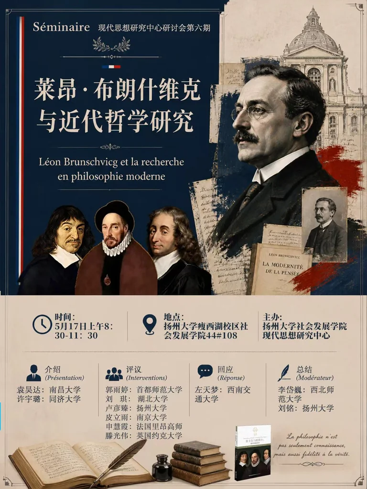
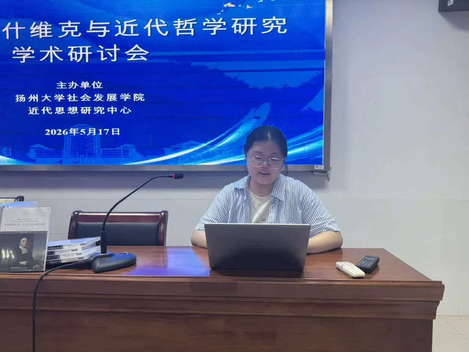

活动概述
2026 年 5 月 17 日上午，“莱昂·布朗什维克与近代哲学研究”学术研讨会在扬州大学瘦西湖校区社会发展学院 44#108 举行。本次会议由扬州大学社会发展学院现代思想研究中心主办，是中心第六期系列研讨会。
研讨会以近期翻译出版的《笛卡尔与帕斯卡：蒙田的阅读者》为重要背景，围绕法国哲学家莱昂·布朗什维克的思想展开。与会者从法国理性主义、科学哲学、近代哲学史书写与文本阅读方法等角度进入讨论，尝试重新理解布朗什维克在近代哲学研究中的位置。
研讨结构
本次研讨会由介绍、评论、回应与总结四个环节构成。介绍环节首先从布朗什维克的研究背景、思想谱系和文本问题进入；评论环节则围绕笛卡尔、帕斯卡、蒙田、斯宾诺莎、孔德与巴什拉等相关思想家展开补充；回应与总结环节进一步把讨论收束到“阅读”这一方法问题以及近代哲学史研究的可能路径上。
这种结构使会议并不只是围绕一位哲学家的生平与著作作一般介绍，而是把布朗什维克放入法国思想传统和现代科学哲学发展的交叉处，考察他如何通过对经典文本的重读来重构近代哲学的内部关系。
报告与评论
- 袁昊达： 从法国 19 世纪教育改革与笛卡尔研究范式的变化切入，说明布朗什维克研究与法国哲学教育制度、理性主义传统之间的关系。
- 许宇璐： 围绕布朗什维克的斯宾诺莎研究与整体理性主义展开介绍，讨论其如何在理性、历史与体系问题之间建立联系。
- 皮立雨、郭雨婷： 分别从蒙田怀疑主义、笛卡尔方法论与知识重构等角度回应布朗什维克对法国理性主义传统的理解。
- 刘琪、卢彦臻、申慧霞、滕光伟： 围绕帕斯卡、斯宾诺莎、孔德、巴什拉及近代科学哲学脉络展开评论，使讨论从文本阅读延伸到科学思想史与历史认识论。
回应与总结
在回应环节中，左天梦强调，《笛卡尔与帕斯卡：蒙田的阅读者》中的关键问题并不是简单的思想影响关系，而是“阅读”本身如何成为一种哲学史方法。笛卡尔和帕斯卡并非被动继承蒙田，而是在各自的思想工程中制造出不同的蒙田形象，由此展开对怀疑、理性、信仰与主体问题的重新安排。
讨论环节中，与会者进一步围绕布朗什维克与法国哲学传统、科学哲学和近代思想史书写之间的关系交换意见。刘铭在总结中指出，布朗什维克研究有助于重新理解法国理性主义，也为近代哲学史与科学哲学的发展提供了一个重要切入点。
活动照片
